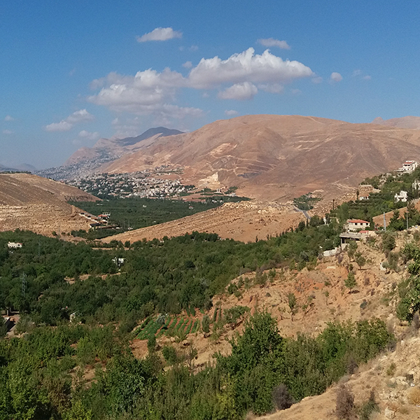
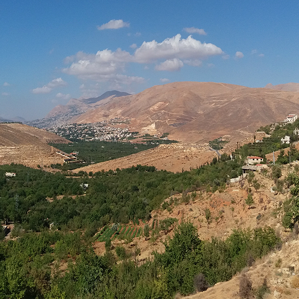

السياحة المستدامة
هي السياحة التي تراعي تمامً آثارها الاقتصادية والاجتماعية والبيئة الحالية والمستقبلة، وذلك مع مراعات تلبية حاجة الزوار، والصناعة،
والبيئة، والمجتمعات المضيفة. يمكن أن تشمل السياحة النقل الأساسي إلى الموقع العام، والنقل المحلي، والإقامة، والترفيه، والانسجام،
والتغذية والتسوق.
يرتبط مفهوم السياحة المستدامة ارتباطاً وثيقا بمفهوم التنقل المستدام، إذ أنه لا سياحة بدون سفر.اثنان من الاعتبارات ذات الصلة هي اعتماد السياحة على الوقود الاحفوري وتأثير السياحة على تغير المناخ.
- تأتي 72% من انبعاثات غاز ثاني أكسيد الكربون .في السياحة من النقل
- وتأتي 24% من أماكن الإقامة.
- و 4% من الأنشطة المحلية غير المنتظمة.


 



يتوقع الاقتصاديون العالميون استمرار نمو السياحة الدولية، وتتوقف القيمة على الموقع. يضع هذا النمو المستمر- باعتبار السياحة واحدة من أكبر دوائر الصناعة وأسرعها نموًا في العالم- ضغطًا كبيرًا على الموائل المتنوعة بيولوجيًا والثقافات الأصلية المتبقية، والتي غالبًا ما تستخدم لدعم السياحة الجماعية. إن السياح الذين يروجون للسياحة المستدامة حساسون لهذه المخاطر ويسعون لحماية الوجهات السياحية، وحماية السياحة كصناعة. يمكن لسيّاح السياحة المستدامة تقليل تأثير السياحة بعدة طرق:
- تعريف أنفسهم بثقافة المجتمعات التي زاروها وسياساتها واقتصادها.
- توقع الثقافات والاحتمالات والافتراضات المحلية واحترامها.
- دعم سلامة الثقافات المحلية من خلال تفضيل الأعمال التجارية التي تحافظ على التراث الثقافي والقيم التقليدية.
- دعم الاقتصادات المحلية من خلال شراء السلع المحلية والمشاركة مع الشركات المحلية الصغيرة.
- الحفاظ على الموارد من خلال البحث عن شركات ذات وعي بيئي، وباستخدام أقل قدر ممكن من الموارد غير المتجددة.